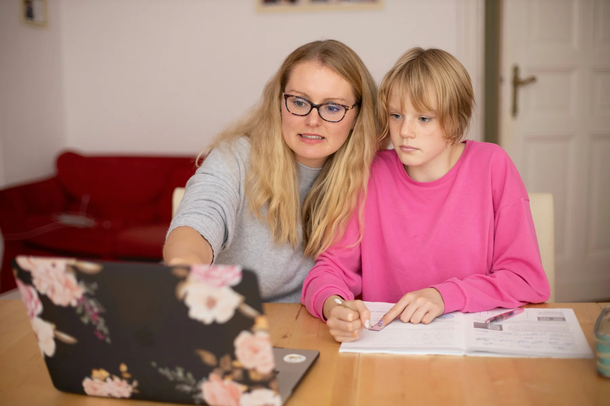
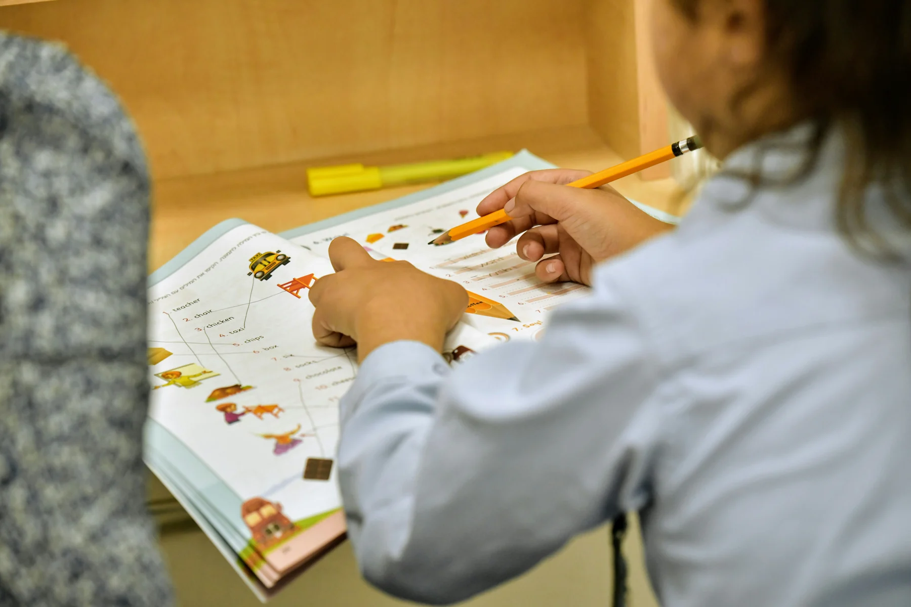

Understand the starting point
Talk through your goals, school topics and the questions you find difficult.
✧ OUR STORY
Every learner deserves time, clarity and the confidence to ask questions.

✧ Our Story
Learning starts with understanding where you are. BrightPath Academy brings personal support to the topics that feel difficult, with clear explanations and time to practise.
From a quieter one-to-one lesson to a lively small group, choose an approach that helps you feel comfortable asking questions. Learn privately or connect with a tutor online.
✧ OUR JOURNEY
Talk through your goals, school topics and the questions you find difficult.
Pick private or online lessons, individually or with a small group.
Make sense of the key ideas before moving on to harder problems.
Use guided exercises to apply what you have learned.
Plan manageable practice between lessons.
Identify what is clearer and what still needs attention.
Connect your progress to school assignments and revision.
Develop the confidence to explain your thinking and ask for support.
✧ YOUR TUTORING SUPPORT
Patient explanations, practical exercises and a plan shaped around the learner.

From number confidence to algebra and problem solving.
Discuss this subjectReading, writing and clear ways to communicate ideas.
Discuss this subjectUnderstand concepts, connect ideas and practise explanations.
Discuss this subject✧ FAQ
Our programs support primary and secondary students, with subject support and exam preparation adapted to each learner’s level. Tell us your year group and curriculum so we can plan the right starting point.
Yes. Choose private in-person lessons or live online tutoring. In-person arrangements depend on location and tutor availability.
Both. Individual lessons focus entirely on one learner. Small groups bring students at a similar level together to practise, ask questions and learn with others.
Maths, English and science are the starting subjects. Share your school curriculum, current topics and learning goals when preparing an enquiry.
Exam preparation combines topic review, timed practice, feedback and revision planning. Work through difficult areas and develop a consistent study routine.
The example timetable uses 60-minute lessons. Frequency and duration can be discussed around the learner’s age, goals and weekly schedule.
A reliable internet connection, a laptop or tablet, a quiet place to work and your school materials. A headset can make it easier to participate.
Choose a program and prepare an enquiry with your preferred format, subject and year group. This first version creates a draft; it does not send a message or confirm a booking.